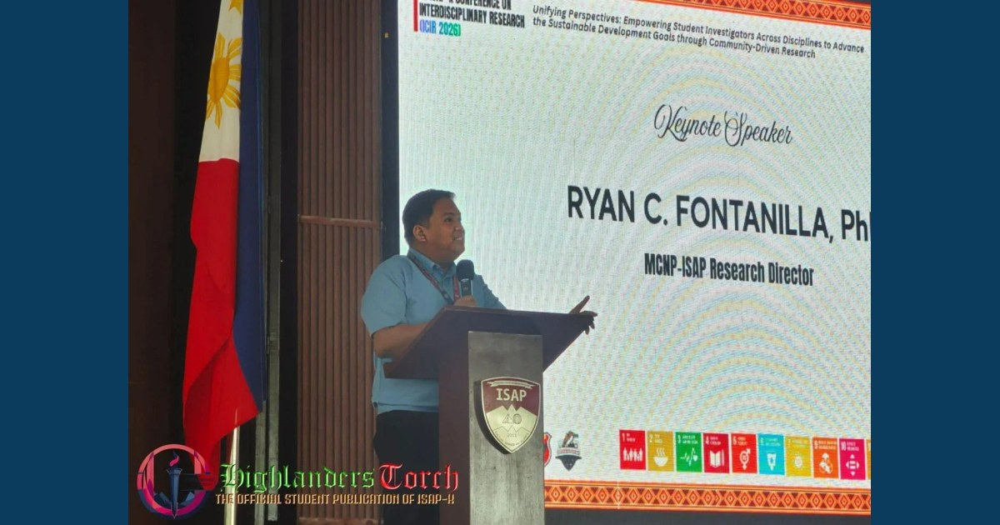

Research for Sustainable Impact

The 1st ISAP-K Conference on Interdisciplinary Research (ICIR 2026), themed "Unifying Perspectives: Empowering Student Investigators Across Disciplines to Advance the Sustainable Development Goals through Community-Driven Research," was held on August 7, 2026, at the ISAP-Kalinga Gymnasium. Research Director Ryan C. Fontanilla delivered the keynote address on leveraging student inquiry for lasting community transformation.
Read full article